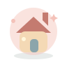

A rather lovely ordinary day.
YOUR LITTLE CORNER
Make yourself at home.
A cozy place to check in, make a small plan, and see what the day has brought.
Everything in its own time
Use this navigation in your own interface
Native links retain keyboard and browser behavior. The current page uses
aria-current="page". Illustrations are decorative; every destination has a
visible name.
Routing and view content belong to the application. This example enhances fragment navigation without a tab widget or a focus trap.
Read the component contract →Original vector miniatures · MIT · no runtime dependencies